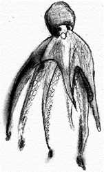
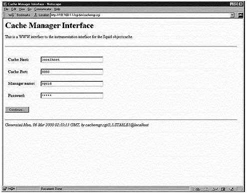
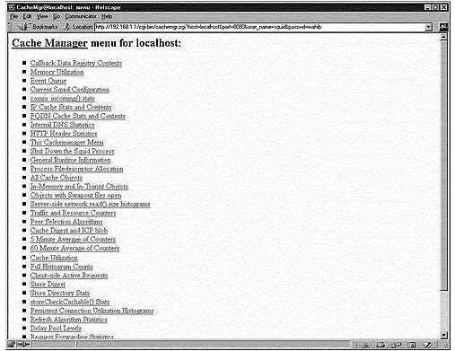
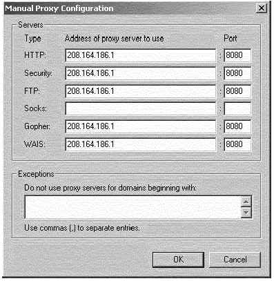

L
i n u x P a r
k
при
поддержке ВебКлуба |
Глава 18 Серверное программное обеспечение (Прокси сервис) (Часть
2)В этой главе
Прокси сервер
Squid
Использование
библиотеки GNU malloc для улучшения производительности Squid
Конфигурации
Организация
защиты Squid
Оптимизация
Squid
Утилита
cachemgr.cgi
Конфигурация
Netscape для работы с прокси сервером Squid
|
 |
Больший контроль
над смонтированным кэш-каталогом Squid
Если вы создаете кэш-каталог для Squid в независимом разделе
вашей Linux системы (например, /cache), подобно тому как мы делали во время
инсталляции, тогда вы можете использовать опции noexec, nodev и nosuid для
улучшения и укрепления безопасности кэша. Эти параметры могут быть установлены в
файле “/etc/fstab” и дают указания системе не исполнять любые двоичные файлы
(noexec), не интерпретировать символьные и блочные специальные устройства
(nodev) и не позволять действовать битам set-user-identifier или set-group-
identifier (nosuid) на монтированной файловой системе (/cache, например).
Примените эту процедуру на раздел, где располагается кэш Squid, чтобы
предотвратить возможность DEV, SUID/SGID и выполнения любых двоичных файлов.
Например, предположим на разделе “/dev/sda8” располагается
каталог “/cache”. Вы должны редактировать файл fstab (vi /etc/fstab) и изменить
строку, связанную с “/dev/sda8”:
/dev/sda8 /cache ext2 defaults 1
2
должна быть:
/dev/sda8 /cache ext2
noexec,nodev,nosuid 1 2
ЗАМЕЧАНИЕ. Вы должны перезагрузить систему, чтобы
изменения вступили в силу.
Иммунизация важных конфигурационных
файлов
Как мы знаем, бит “постоянства” может быть использован для
предотвращения удаления, переписывания или создания символической ссылки к
файлу. Так как файл “squid.conf” уже настроен, хорошей идеей будет
иммунизировать его:
[root@deep /]# chattr +i
/etc/squid/squid.conf
Атрибуты atime и
noatime
Атрибуты atime и noatime могут быть использованы, чтобы немного
улучшить производительность кэша Squid. Смотрите главу 4 в этой книге, “Общая
системная оптимизация”, для большей информации по этой теме.
Физическая память
Наиболее важный ресурс для Squid это физическая память. Вам не
нужен очень быстрый процессор. Ваша дисковая система будет основным узким
местом, так что быстрые диски важны для кэша. Не используйте IDE дисков, есди
это возможно.
Утилита cachemgr.cgi, доступная по умолчанию, когда вы
скомпилировали и инсталлировали Squid на вашей системе, создана для запуска
через веб интерфейс, и выводит различную статистику о конфигурации и работе
Squid. Эта программа располагается в каталоге “/usr/lib/squid”, и вы должны
переместить ее в ваш каталог “cgi-bin” (например, /home/httpd/cgi-bin).
Следующие шаги помогут вам настроить программу для использования.
Шаг
1
Переместите программу “cachemgr.cgi” в ваш каталог
“cgi-bin”:
[root@deep /]# mv
/usr/lib/squid/cachemgr.cgi /home/httpd/cgi-bin
ЗАМЕЧАНИЕ. Я подразумеваю, что ваш каталог “cgi-bin”
расположен в каталоге “/home/httpd/cgi-bin”; возможны и другие пути. Этот
“cgi-bin” будет существовать если вы инсталлировали веб сервер Apache.
Шаг
2
После того, как вы переместили “cachemgr.cgi” в “cgi-bin”, вы
можете обратится к ней введя в вашем броузере следующий адрес (http://my-web-server/cgi- bin/cachemgr.cgi).
<my-web-server> это адрес вашего веб сервера Apache, а
<cachemgr.cgi> это утилита, которую вы только, что переместили в каталог
“cgi-bin” для получения информации и конфигурации прокси сервера Squid.

Если вы настраивали файл “squid.conf”, то используйте парольную
аутентификацию для доступа к “cachemgr.cgi”, вам будет предложено ввести имя
кэша (Cache Host), порт кэша (Cache Port), имя администратора (Manager name) и
пароль (Password) перед тем, как допустят к программе “cachemgr.cgi”. Смотрите
конфигурационный файл “/etc/squid/squid.conf”, приведенный выше, для большей
информации.

После того как вы прошли аутентификацию на сервере, вы увидите
в вашем броузере интерфейс Cache Manager menu, где вы сможете изучать и
анализировать различные опции связанные с прокси сервером Squid.
Если вы решили использовать Squid как кэширующий прокси сервер
и позволять всем пользователям использовать его для доступа в Интернет, вы
должны настроить соответствующим образом броузеры пользователей, чтобы они брали
информацию со Squid, вместо прямого обращения в Интернет.
Для Netscape Communicator, выполните следующие шаги:
- Откройте Netscape Communicator
- Перейдите в меню Edit
- Щелкните на Preferences …
- Двойной щелчок мыши на Advanced category слевой стороны
- Щелкните на подкатегории Proxies
- Выберите с правой стороны радио кнопку Manual proxy configuration
- Щелкните на кнопке View
- Заполните поля с информацией о вашем прокси сервере
Например:
- HTTP: 208.164.186.1 Port: 8080
- Security: 208.164.186.1 Port: 8080
- FTP: 208.164.186.1 Port: 8080
- Gopher: 208.164.186.1 Port: 8080
- WAIS: 208.164.186.1 Port: 8080

Инсталлированные файлы
> /etc/squid
> /etc/squid/mib.txt
> /etc/squid/squid.conf.default
> /etc/squid/squid.conf
> /etc/squid/mime.conf.default
> /etc/squid/mime.conf
> /etc/squid/errors
> /etc/squid/errors/ERR_ACCESS_DENIED
> /etc/squid/errors/ERR_CACHE_ACCESS_DENIED
> /etc/squid/errors/ERR_CACHE_MGR_ACCESS_DENIED
> /etc/squid/errors/ERR_CANNOT_FORWARD
> /etc/squid/errors/ERR_CONNECT_FAIL
> /etc/squid/errors/ERR_DNS_FAIL
> /etc/squid/errors/ERR_FORWARDING_DENIED
> /etc/squid/errors/ERR_FTP_DISABLED
> /etc/squid/errors/ERR_FTP_FAILURE
> /etc/squid/errors/ERR_FTP_FORBIDDEN
> /etc/squid/errors/ERR_FTP_NOT_FOUND
> /etc/squid/errors/ERR_FTP_PUT_CREATED
> /etc/squid/errors/ERR_FTP_PUT_ERROR
> /etc/squid/errors/ERR_FTP_PUT_MODIFIED
> /etc/squid/errors/ERR_FTP_UNAVAILABLE
> /etc/squid/errors/ERR_INVALID_REQ
> /etc/squid/errors/ERR_INVALID_URL
> /etc/squid/errors/ERR_LIFETIME_EXP
> /etc/squid/errors/ERR_NO_RELAY
> /etc/squid/errors/ERR_ONLY_IF_CACHED_MISS
> /etc/squid/errors/ERR_READ_ERROR
> /etc/squid/errors/ERR_READ_TIMEOUT
> /etc/rc.d/rc4.d/S90squid
> /etc/rc.d/rc5.d/S90squid
> /etc/rc.d/rc6.d/K25squid
> /etc/logrotate.d/squid
> /usr/lib/squid
> /usr/lib/squid/dnsserver
> /usr/lib/squid/unlinkd
> /usr/lib/squid/cachemgr.cgi
> /usr/lib/squid/icons
> /usr/lib/squid/icons/anthony-binhex.gif
> /usr/lib/squid/icons/anthony-bomb.gif
> /usr/lib/squid/icons/anthony-box.gif
> /usr/lib/squid/icons/anthony-box2.gif
> /usr/lib/squid/icons/anthony-c.gif
> /usr/lib/squid/icons/anthony-compressed.gif
> /usr/lib/squid/icons/anthony-dir.gif
> /usr/lib/squid/icons/anthony-dirup.gif
> /usr/lib/squid/icons/anthony-dvi.gif
> /usr/lib/squid/icons/anthony-f.gif
> /usr/lib/squid/icons/anthony-image.gif
> /usr/lib/squid/icons/anthony-image2.gif
> /usr/lib/squid/icons/anthony-layout.gif
> /usr/lib/squid/icons/anthony-link.gif
> /usr/lib/squid/icons/anthony-movie.gif
> /usr/lib/squid/icons/anthony-pdf.gif
> /usr/lib/squid/icons/anthony-portal.gif
> /usr/lib/squid/icons/anthony-ps.gif
> /usr/lib/squid/icons/anthony-quill.gif
> /usr/lib/squid/icons/anthony-script.gif
> /etc/squid/errors/ERR_SHUTTING_DOWN
> /etc/squid/errors/ERR_SOCKET_FAILURE
> /etc/squid/errors/ERR_TOO_BIG
> /etc/squid/errors/ERR_UNSUP_REQ
> /etc/squid/errors/ERR_URN_RESOLVE
> /etc/squid/errors/ERR_WRITE_ERROR
> /etc/squid/errors/ERR_ZERO_SIZE_OBJECT
> /etc/rc.d/init.d/squid
> /etc/rc.d/rc0.d/K25squid
> /etc/rc.d/rc1.d/K25squid
> /etc/rc.d/rc2.d/K25squid
> /etc/rc.d/rc3.d/S90squid
> /usr/lib/squid/icons/anthony-sound.gif
> /usr/lib/squid/icons/anthony-tar.gif
> /usr/lib/squid/icons/anthony-tex.gif
> /usr/lib/squid/icons/anthony-text.gif
> /usr/lib/squid/icons/anthony-unknown.gif
> /usr/lib/squid/icons/anthony-xbm.gif
> /usr/lib/squid/icons/anthony-xpm.gif
> /usr/sbin/RunCache
> /usr/sbin/RunAccel
> /usr/sbin/squid
> /usr/sbin/client
> /var/log/squid